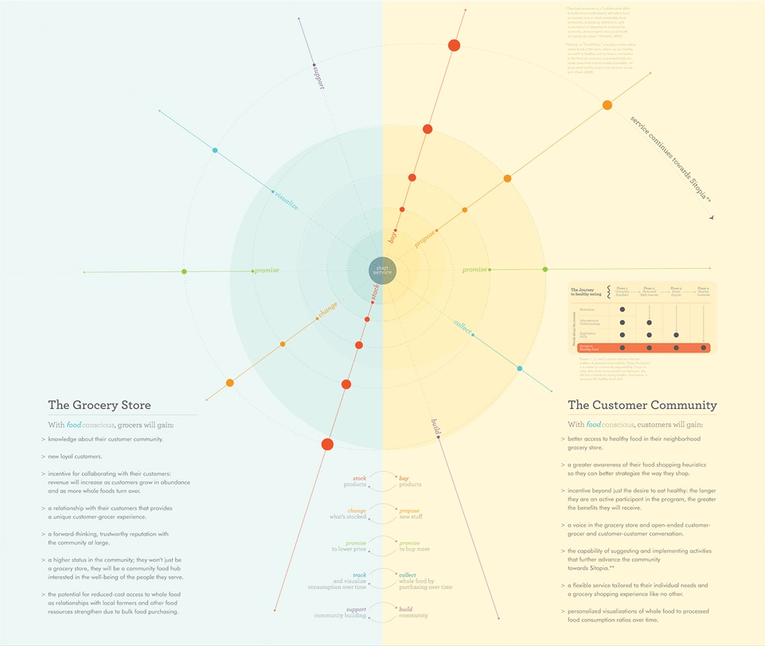
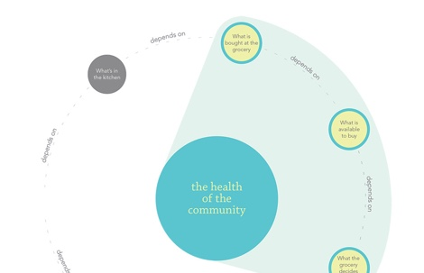
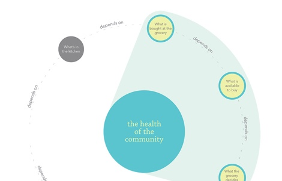

FOODCONSCIOUS, CMU / 2011
FoodConscious was the outcome of my thesis project at CMU. It was a hypothetical service that facilitates community-building between grocery shoppers and their local, conventional grocery stores. The goal was that, over time, this service would change the supply and demand of food in a way that would impact peoples’ access to high quality, healthy food.
{kind=link}
Visualization of how the foodConscious service could conceptually work
Background & Approach
In the Master of Design program at CMU, students spend their 2nd year independently researching and designing within an area of personal interest with the guidance of a thesis advisor. The space that I chose to explore was how food and agriculture negatively impact how our society eats. I chose this topic because I am passionate about healthy eating and, interestingly, grew up in my family’s locally owned and operated grocery store: Calandro’s Supermarket.
I spent my thesis year reading many books and research papers (love Michael Pollan!), visiting my family’s grocery store for research and prototyping, synthesizing what I was learning (and maybe ranting a bit about it), and ultimately imagining a new service that could potentially solve this problem we have in the US with junk food and western disease.


Left and Middle: In-store research; Right: Map of a participant navigating the grocery store
Problem & Opportunity
Through the research that I did, I discovered that the reason why people have so much trouble eating healthy boils down to one core problem: access to high quality, healthy food. There are other things that contribute to this problem – like lack of knowledge or motivation – but the lack of access is the root of the problem.
It‘s a circular problem as well: People don’t have great access to healthy food, so they resort to unhealthy food. As this becomes a habit, they eat even less healthy food… and the cycle continues until there is so much demand for unhealthy food that it crowds out all the healthy food out there.
 

{kind=link}


Top left: Visualization of the barriers to eating healthy; Top right: The supply and demand cycle; Bottom: Speed-Dating of ideated concepts
Solution
This led me to design foodConscious, which is a service that attempts to intercept this supply and demand problem. In short, it allows grocery shoppers a voice in accessing the whole foods they want (but currently can’t get) at their local store and, in turn, the store provides the whole foods that customers want with discounts based on the volume that those customers buy.
I leveraged the produce department of my family’s grocery store as an opportunity to test an MVP of a touchpoint of this service: The Produce Proposal. It’s a space within the store for customers to request the produce they want but that the store doesn’t currently stock. I hypothesized that people would:
1. Like and use The Produce Proposal board
2. Feel they have a voice in what the store offers
3. Propose produce that the store didn’t currently have
4. Prove that the existing selection didn’t meet customers’ needs


The Produce Proposal board directionally validated all four of these hypotheses and resulted in the store actively re-designing their produce selection. I took what I learned to continue imagining the larger service and then closed out my thesis year.
If you want to read more, view my thesis documentation.